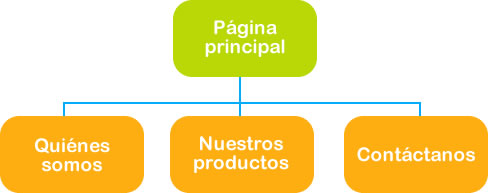
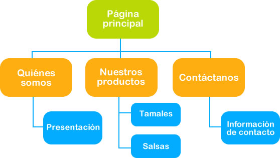

Tema 2. Estructura del Sitio Web
1. ¿Qué es una estructura?
La estructura de un Sitio Web se refiere a la forma final que tendrá el Sitio, incluyendo secciones, funcionalidades y esquema de navegación.
Al momento de hacer la arquitectura de la Página se concretaron los espacios de la misma, ahora se va a definir las secciones del Sitio.
Un Sitio Web al igual que una casa tiene una entrada, esa entrada será nuestra página principal la cual nos dará el acceso a la información contenida en el Sitio; información que deberá estar organizada de manera jerárquica.
Para verlo de manera más clara sigamos el ejemplo de la familia López, ellos desean diseñar un Sitio para ofrecer el producto que ellos venden, sus tamales. ¿Qué secciones cree que debe tener su Sitio Web?
Ellos contemplaron tres secciones:
- Una sección que haga referencia a quiénes integran su empresa, a la cual llamarán "Quiénes somos"
- Otra sección dónde mostrarán los productos que ofrecen, sus cualidades y características, llamada: "Nuestros productos".
- Y una tercera sección donde exista la información necesaria para que los interesados se puedan comunicar con ellos, generalmente conocida como "Contáctanos"
La estructura quedará de la siguiente manera:

2. Mapa del Sitio
El mapa del Sitio es resultado de la estructura definida para el Sitio Web y se refiere al árbol de contenidos o dicho de otra manera a la cantidad de niveles o subniveles que tendrá el Sitio en cada sección.
Al referirnos a un árbol, nos referimos al tronco, ramas, y hojas; en ese orden jerárquico se va organizando la información que habrá en la Página.
El tronco se refiere a la página principal de la cual se ligarán las secciones (ramas) y de cada rama se colgarán las hojas que representan las Páginas Web.
Con el mapa completo se dará cuenta de la información que necesita generar para diseñar y publicar en su Sitio Web.
Ejemplo.
Siguiendo con el ejemplo del Sitio de la familia López, ellos ya tienen definida la estructura, por lo que definir el mapa fue muy sencillo, este quedo de la siguiente manera:
3. Navegación en el Sitio
La navegación en el Sitio Web se refiere a la manera en que se enlaza la información entre las distintas páginas que integran el Sitio.
Ejemplo.
Siguiendo el caso de la familia López, en su Sitio Web desde la página principal se tendrá acceso a tres secciones en las cuales habrá información.
¿De qué manera se podrá regresar a la página principal o ir a otra página del Sitio?
Es muy sencillo:
-
Cuando se encuentre en alguna de las secciones para pasar a otra use la barra de navegación, la cual incluye las secciones del Sitio y esta le permitirá navegar entre las secciones.

-
Cuando se encuentre en alguna de las secciones y desee pasar a otra use la barra de navegación, la cual tiene enlaces a las secciones del Sitio permitiéndole navegar libremente entre las secciones.